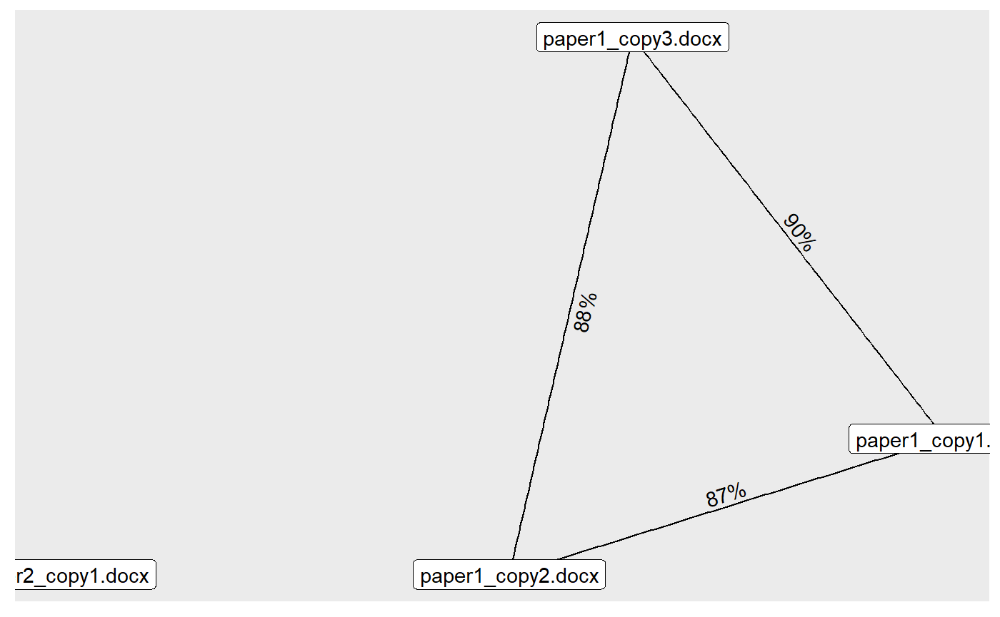

Create a list of files:
my_files <- list.files(path = '../man/files/', pattern = '.doc', full.names = TRUE) my_files #> [1] "../man/files/paper1_copy1.docx" "../man/files/paper1_copy2.docx" #> [3] "../man/files/paper1_copy3.docx" "../man/files/paper2_copy1.docx"
The first 3 documents are different drafts of the same paper, so we would expect them to be similar to each other. The last document is a draft of a different paper, so it should be dissimilar to the first 3. All files are about 45K words long.
Now we can use cheatR to find duplicates.
The only function, catch_em, takes the following input arguments:
flist - a list of documents (.doc/.docx/.pdf). A full/relative path must be provided.n_grams - see ngram package.time_lim - max time in seconds for each comparison (we found that some corrupt files run forever and crash R, so a time limit might be needed).library(cheatR) #> Catch 'em cheaters! results <- catch_em(flist = my_files, n_grams = 10, time_lim = 1) # defaults #> Reading documents... Done! #> Looking for cheaters #> ================================================================================ #> Busted!
The resulting list contains a matrix with the similarity values between each pair of documents:
results #> paper1_copy1.docx paper1_copy2.docx paper1_copy3.docx #> paper1_copy1.docx 100% #> paper1_copy2.docx 87% 100% #> paper1_copy3.docx 90% 88% 100% #> paper2_copy1.docx 0% 0% 0% #> paper2_copy1.docx #> paper1_copy1.docx #> paper1_copy2.docx #> paper1_copy3.docx #> paper2_copy1.docx 100% #> #> All files read successfully. #> All files compared successfully.
You can also plot the relational graph if you’d like to get a more clear picture of who copied from who.
plot(results, weight_range = c(0.7, 1), remove_lonely = FALSE) #> Loading required namespace: tidygraph #> Loading required namespace: ggraph #> Using `stress` as default layout
